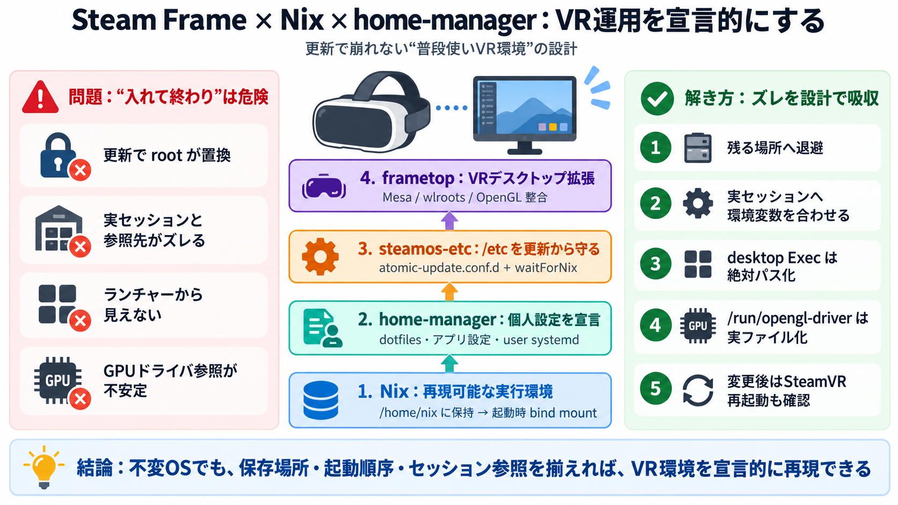

Nix on the Steam Deck
``` This isn’t a scary vendor lockdown security feature or anything, it’s mostly to prevent the user from being surpris…

SteamOS系の不変ルートと、home-managerの宣言的管理を組み合わせて、VR環境まで“普段使い”できる形に整えます。
不変（immutable）なルートと、ネストされたPlasmaセッションがあるため、Nixやhome-managerを入れても運用の反映がズレやすいのが問題です。
ストア（/nix相当）は更新をまたいで残る場所へ“退避”し、起動時に必要な範囲へだけ“差し込む”発想で安定させます。
Nixで実行環境を再現し、home-managerで個人の宣言を固定し、steamos-etcで更新由来の揺れを吸収し、VR運用をframetop側で拡張します。
home-managerのswitchが成功しても、ネストされたPlasmaセッションのせいでユーザーsystemdの再読み込みが起きないことがあります。
Steamの「+メニュー」は ~/.local/share/applications への依存が強く、home-manager生成のdesktopファイルが見えないことがあります。
steamos-etcで /etc の編集を更新に巻き戻されない形へ寄せ、さらに起動順序の問題（tmpfilesタイミング等）も吸収します。
/run/opengl-driver は、Nixのstoreリンクのままだと読み取りタイミングで失敗しやすく、実ファイル化が必要になります。
VRでの複数デスクトップ運用を広げるframetopは、Mesaやwlroots_0_20などの整合性が崩れると不具合になりやすいとされています。
この文章は「VR環境を含む日常運用」を作るために、ズレやすい箇所を設計で吸収する点が核です。
本稿は実運用の摩擦（起動順序・セッションズレ・/etc更新・PATH）を具体化している一方、失敗の体系化は十分とは言いにくいです。
Nixとhome-managerは“設定を書くだけ”では終わらず、immutable・セッション・起動順序・/run・/etcを運用設計として縫い合わせて初めて効きます。
``` This isn’t a scary vendor lockdown security feature or anything, it’s mostly to prevent the user from being surpris…
As you all know SteamOS uses an immutable root filesystem and users are not expected to modify it because all changes ar…
Liked 22 times The Steam Deck (and SteamOS) delivers a fantastic console-like experience on a Linux system. However, it…
> Escrito originalmente por Haruspex: > > Have you discovered the nature of SteamOS's immutable core file system? > …
Second, remember that SteamOS is an immutable system. This means you cannot easily change system files. If you need to i…